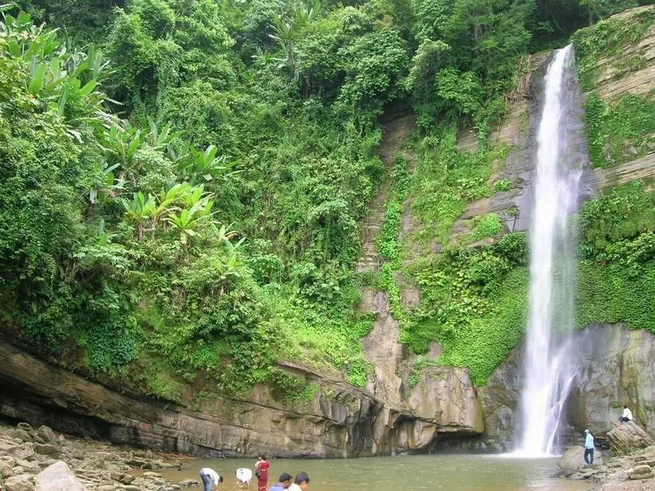
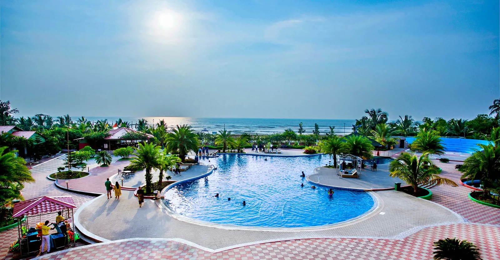

MAIN BEACH
コックスバザール・ビーチ
海岸散策や夕景を楽しめる中心エリア。遊泳時は現地の案内に従います。

COX'S BAZAR / COASTAL CITY
ベンガル湾に面した広い砂浜と、美しい夕景で知られる海岸都市です。
ABOUT THE AREA
コックスバザールは、長く続く砂浜とベンガル湾の景色を楽しめる観光地です。朝夕は比較的過ごしやすく、海岸散策や写真撮影に向いています。
繁忙期は宿泊施設や交通機関が混み合うことがあるため、事前予約と余裕のある計画がおすすめです。
PLACES TO SEE
写真と短い説明で、地域の特徴を紹介します。
海岸散策や夕景を楽しめる中心エリア。遊泳時は現地の案内に従います。

比較的落ち着いた雰囲気の海岸。潮の満ち引きや足元に注意してください。

緑と滝の景観を楽しめるエリア。季節により水量や道路状況が変わります。

漁業や海辺の暮らしを感じられる風景。地域の生活を尊重して見学します。
TRAVEL NOTES
安全で気持ちのよい旅にするための基本的な注意点です。
日差しが強い時間帯を避け、朝夕を中心に行動します。
遊泳可能な区域と警告表示を確認し、単独行動を避けます。
日焼け対策、歩きやすい靴、飲料水を準備します。
MAP
外部地図サービスを利用しています。